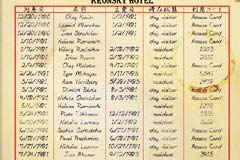
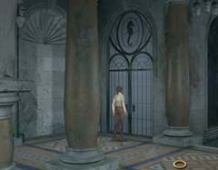
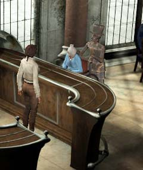

| 概要 | 地図 | |
| 淡いヒント集 | ヒント集 | 的確なヒント集 |
| 攻略最短ルート | Syberia 攻略へ |
| << 前の段階へ | 地域選択へ | 次の段階へ >> |
アラルバッド
|
ヘレナの要求
あなたはヘレナがホテルのどこにいるのかを突き止めた。しかし、そこにはどうやって行けばいいのだろうか。あなたは、以下のことをやらなければならない。・コードを入手し、桟橋へ行く ・桟橋でヘレナと会い、ジェイムスを呼ぶ ・ブルーヘレナの作り方を調べる ・この装置を使えば桟橋への扉が開きそうだ。 ・では、4桁のコードとは何か?

・ホテルのカウンターにあったノートである。 ・名前やチェックインした日にち以外に、利用コードというものがあるが・・・。

・桟橋へ行くことができただろうか? ・バーにある装置を使って開く扉は、もしかしたらこちらかもしれない。 
・ジェイムスを呼ぶベルはこれらしい。 ・これをならせばジェイムスが来るのだろうか。 ・来ないのならば、どうすればよいか。直接呼びに行くか。 ・どこかに似たようなものはなかったか?

・ブルーヘレナの作り方はどうやったら分かるのか。 ・このカクテルを作ったのは誰か? その人はどこにいるのか。 ・少なくとも、このホテルにはカクテルの作者はいない。どうやって聞けばよいか。 ・聞く場合は電話を使えばよい。電話番号らしい数字をあなたは見たか? |
| << 前の段階へ | 地域選択へ | 次の段階へ >> |
| 概要 | 地図 | |
| 淡いヒント集 | ヒント集 | 的確なヒント集 |
| 攻略最短ルート | Syberia 攻略へ |
Syberia
| 目次へ戻る | ページの上部へ |